Empieza en 3 minutos
- Instala BattleLens y ábrelo: aparece un icono junto al reloj.
- Abre tu emulador y entra en un combate, con los nombres en pantalla.
- Bandeja → Ventana del emulador → elige tu emulador.
- Bandeja → Nuevo perfil con un preset… → comprueba que los recuadros caen sobre los nombres → Guardar perfil.
- Juega. En cada combate la ficha del rival aparece sola y se oculta al terminar.
¿Tu juego no tiene preset? Usa Calibrar a mano: es dibujar un recuadro sobre el nombre del rival.
Instalar
- Descarga
BattleLens-Setup-x.y.z.exede la última versión. Si prefieres no instalar nada, descargaBattleLens-x.y.z-portable.zip, descomprímelo y ejecutaBattleLens.exe. - Ejecuta el instalador. No pide permisos de administrador.
- Si Windows muestra «Windows protegió su PC», pulsa Más información → Ejecutar de todas formas. Sale porque el ejecutable no está firmado con un certificado de pago. Puedes comprobar la descarga con el
SHA256SUMS.txtde la versión.
Requisitos: Windows 10 (2004 o posterior) u 11, de 64 bits.
OCR de Windows. BattleLens lee los nombres con el reconocimiento de texto que trae Windows. Casi todos los equipos lo tienen en su idioma. Si falta, la app avisa al arrancar y aparece Instalar OCR de Windows… en la bandeja y en Ajustes › General.
El menú de la bandeja
BattleLens no tiene ventana principal: vive en la bandeja del sistema, junto al reloj (si no lo ves, mira en la flecha ^). Haz clic en el icono para abrir el menú; con doble clic se abren los Ajustes.
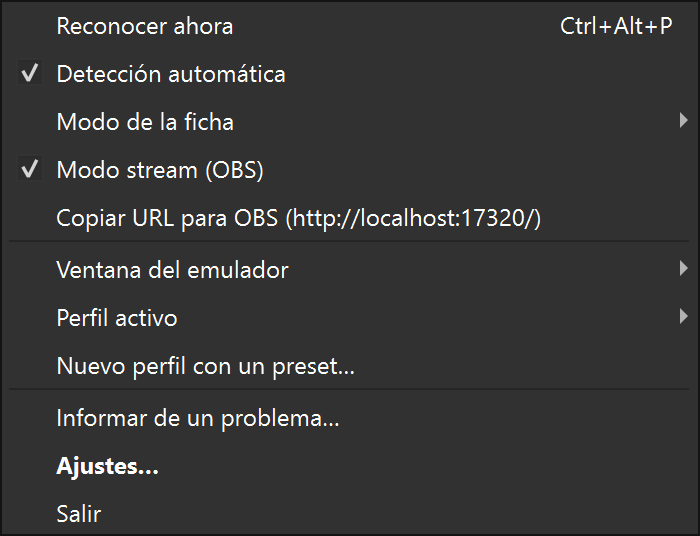
- Reconocer ahora
- Lee el nombre del rival en ese momento. Útil si tienes la detección automática apagada.
- Detección automática
- Vigila el combate y muestra la ficha sola. Activada por defecto.
- Modo de la ficha
- Normal (aventura y captura) o Competitivo (combate). Ver Normal y Competitivo.
- Modo stream (OBS) · Copiar URL para OBS
- Ficha para tu directo. Ver Directo con OBS.
- Ventana del emulador
- La ventana que BattleLens mira. Puede estar tapada por otras ventanas.
- Perfil activo
- Cambia de perfil o abre Gestionar perfiles…. Al cambiar de juego, su perfil se activa solo.
- Nuevo perfil con un preset…
- La forma más rápida de configurar un juego.
- Informar de un problema…
- Prepara un ZIP para adjuntarlo en GitHub. Ver Si algo no va bien.
Configurar tu juego con un preset
Un perfil le dice a BattleLens dónde está cada nombre en la pantalla de tu juego. Se crea una vez por juego y se guarda.
- Entra en un combate en el emulador, con el nombre del rival y el de tu Pokémon a la vista.
- Bandeja → Nuevo perfil con un preset…
- Comprueba el Juego de arriba. BattleLens lo propone a partir del título de la ventana.
- Mira la imagen: la línea discontinua blanca marca dónde ha encontrado la imagen del juego y los recuadros de colores, dónde leerá cada cosa. Debajo tienes lo que lee en cada uno.
- Si los recuadros caen sobre los nombres, pulsa Guardar perfil, ponle nombre y listo.
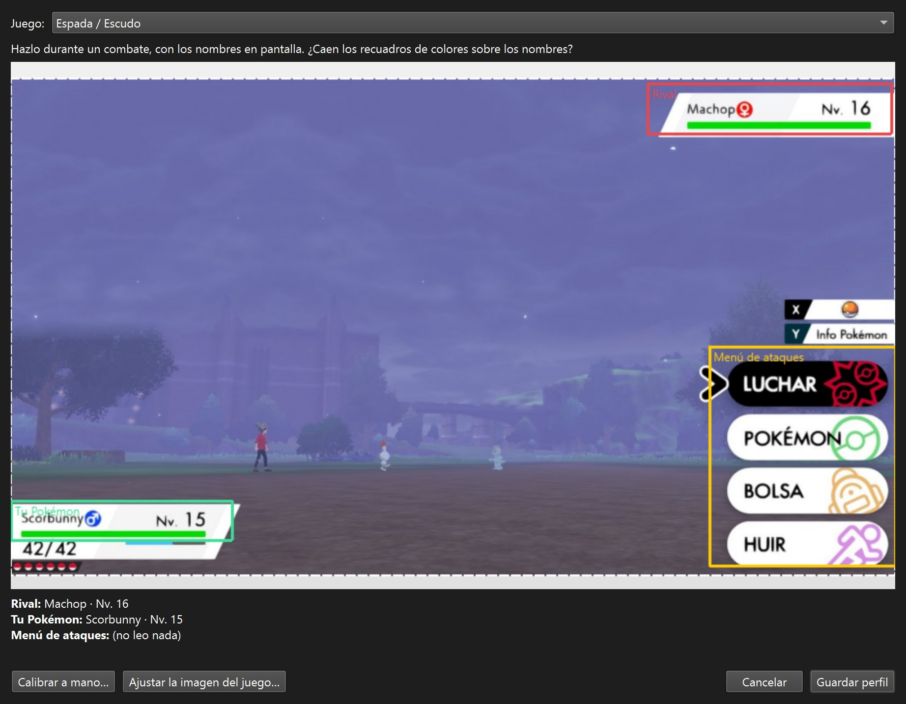
- ¿Los recuadros están desplazados? Pulsa Ajustar la imagen del juego… y dibuja un rectángulo sobre toda la pantalla del juego, sin las barras del emulador.
- ¿El menú de ataques dice «(no leo nada)»? Es normal si no tienes abierto el menú de Luchar: se lee cuando eliges ataque.
- ¿Nada encaja? Pulsa Calibrar a mano….
Juegos con preset: Rojo/Azul/Amarillo, Oro/Plata/Cristal, Rubí/Zafiro/Esmeralda, Rojo Fuego/Verde Hoja, Diamante/Perla/Platino, HeartGold/SoulSilver, Negro/Blanco (y 2) y Espada/Escudo.
El juego del perfil importa: decide las formas regionales (Alola, Galar, Hisui, Paldea), los tipos de esa generación y su tabla de eficacias. Puedes cambiarlo en Ajustes › Perfiles → Juego.
Un perfil creado con preset recuerda dónde estaba la imagen del juego, así que puedes jugar a pantalla completa, maximizado o en ventana: las regiones siguen a la imagen. Los perfiles creados antes de la versión 0.4 no lo saben; si cambias el tamaño de la ventana, vuelve a crearlos con un preset.
Calibrar a mano
Para juegos sin preset, o si el preset no encaja:
- En un combate, pulsa Ctrl+Alt+C (o Ajustes › Perfiles → Calibrar a mano…).
- Dibuja con el ratón un rectángulo que cubra el nombre del rival. Cuanto más ajustado, mejor; no pasa nada si incluye el nivel.
- Pulsa Enter para confirmar (Esc cancela), revisa el nombre y el juego propuestos y acepta.
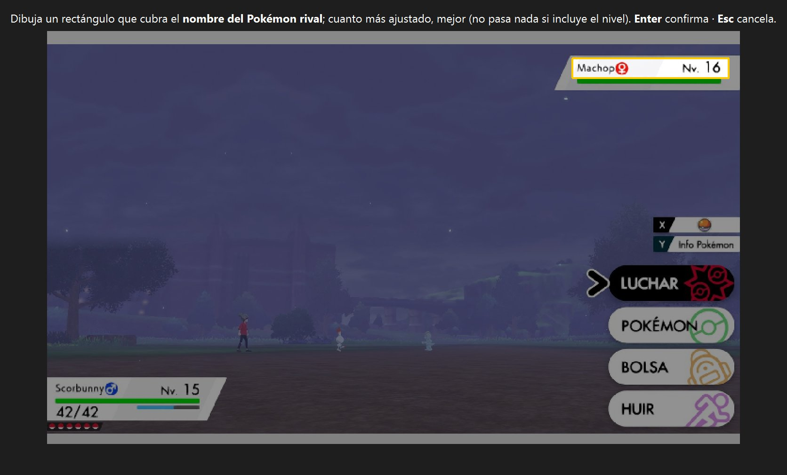
Si vas a usar el modo Competitivo, incluye el nivel en el recuadro: BattleLens lo necesita para calcular las estadísticas reales y los movimientos probables.
La ficha en combate
Con la detección automática activada no tienes que pulsar nada: en cuanto se ve el nombre del rival, la ficha aparece junto al emulador. Se oculta unos segundos después de terminar el combate (4 s por defecto).
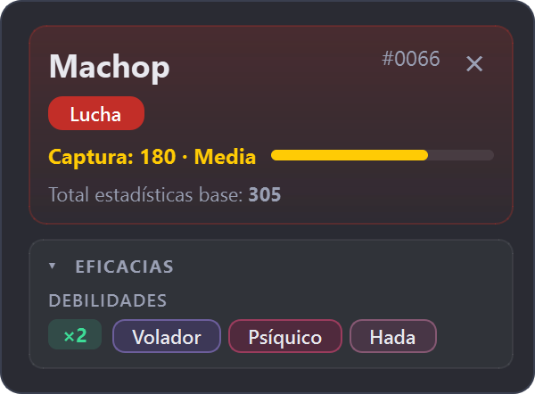
- Cabecera
- Nombre, número de la Pokédex y tipos del rival en el color de cada tipo.
- Captura
- Ratio de captura con su dificultad y un medidor: cuanto más lleno, más fácil.
- Eficacias
- Debilidades (×2, ×4), resistencias e inmunidades según la tabla de tipos de tu juego.
- Ciérrala con la ✕ de la esquina o con Ctrl+Alt+H.
- Muévela arrastrándola; recuerda dónde la dejaste.
- Pliega una sección con un clic en su título (▾). Lo plegado se recuerda en cada modo.
- Si la ficha no cabe en la pantalla, se desplaza con la rueda del ratón.
- ¿Prefieres ir a mano? Apaga la Detección automática en la bandeja y pulsa Ctrl+Alt+P en cada combate.
Tu ficha no sale en las capturas de pantalla ni en OBS: está oculta a propósito. Para el público está el modo stream.
Normal y Competitivo
Cambia de modo con Ctrl+Alt+M, desde la bandeja (Modo de la ficha) o en Ajustes › Ficha.
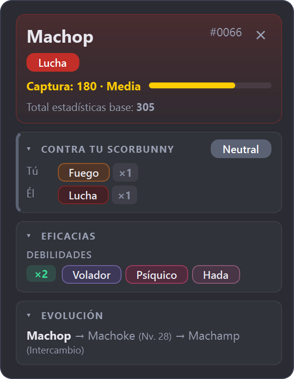
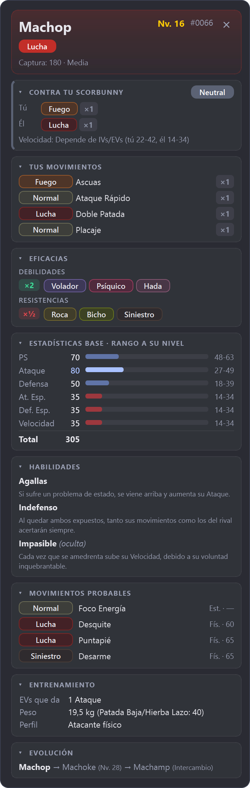
El modo Competitivo añade:
- Nivel del rival y sus estadísticas reales a ese nivel (mínimo–máximo), con la fórmula de cada generación.
- Habilidades con su descripción y su efecto en las eficacias (por ejemplo, «Levitación → Tierra ×0»).
- Movimientos probables: los 4 últimos que aprende hasta su nivel en ese juego.
- Quién es más rápido, tú o él, en la sección «Contra tu…».
- Entrenamiento: EVs que da, peso (para Patada Baja) y perfil de estadísticas.
Las secciones que ves en cada modo se eligen en Tu ficha a medida. Las capturas de arriba las muestran todas.
Tu Pokémon, tus movimientos y dobles
Además del rival, cada perfil puede leer tres cosas más. Configúralas en Ajustes › Perfiles (o bandeja → Perfil activo → Gestionar perfiles…), en la tarjeta Perfil activo:
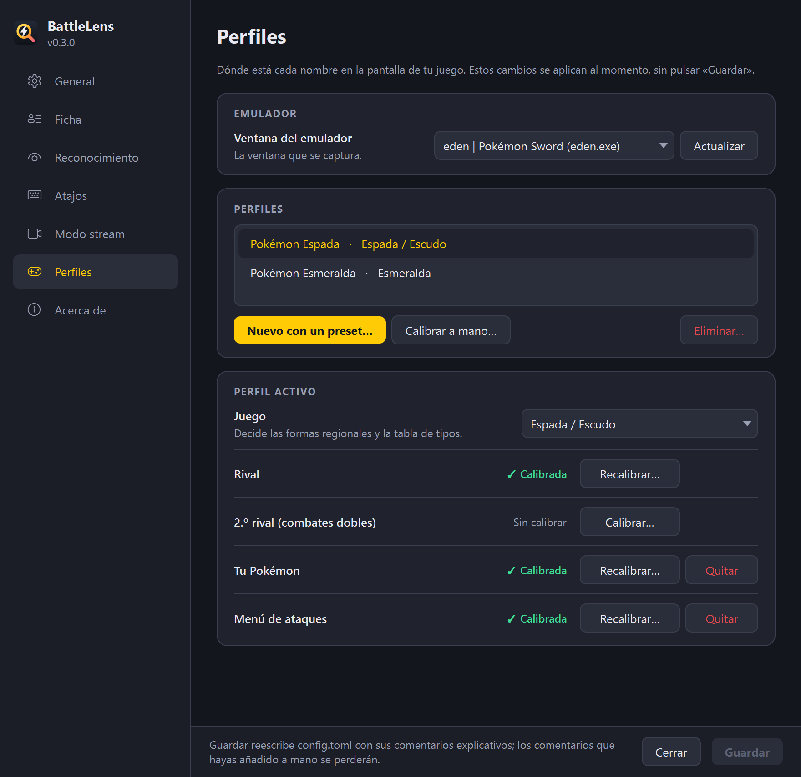
- Tu Pokémon
- Con su nombre calibrado, la ficha muestra «Contra tu X»: lo que le hacen tus tipos, lo que te hacen los suyos y un veredicto (Ventaja / Neutral / Desventaja). Si tu Pokémon tiene mote, no se puede reconocer.
- Menú de ataques
- Calíbralo con el menú de Luchar abierto, sobre los 4 movimientos. Cada vez que lo abres, BattleLens lee tus ataques y los recuerda por especie; la sección Tus movimientos dice cuánto le hace cada uno a ese rival. Mientras no los haya leído, muestra los probables de tu Pokémon a su nivel.
- 2.º rival (combates dobles)
- En los combates dobles aparecen dos fichas, una al lado de la otra.
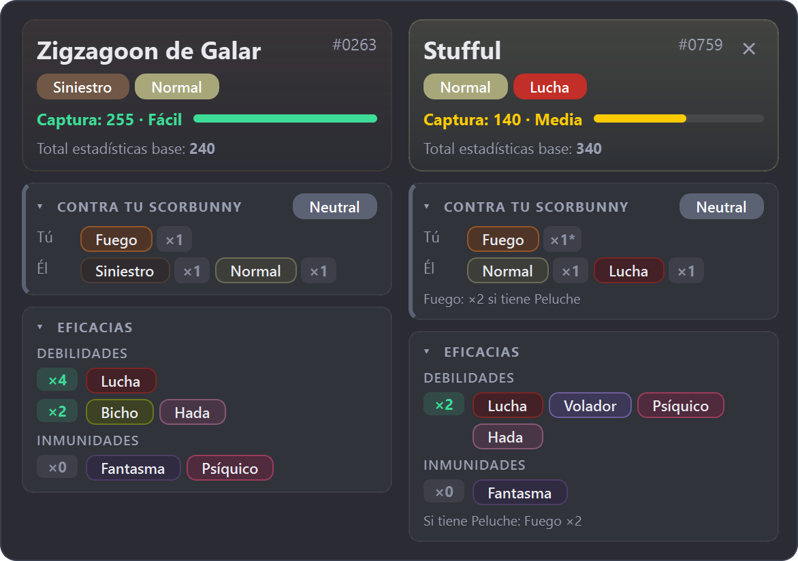
«Contra tu Pokémon» y «Tus movimientos» vienen ocultas de fábrica. Actívalas en Ajustes › Ficha después de calibrar.
Megas y otras formas
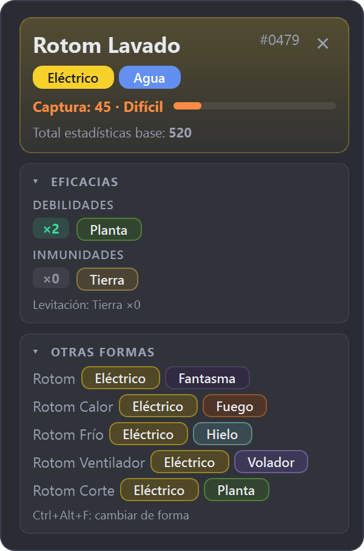
Las formas regionales (Alola, Galar, Hisui, Paldea) se eligen solas según el juego del perfil.
Las megaevoluciones y otras formas (Rotom, Deoxys, Giratina…) muestran el mismo nombre en pantalla, así que BattleLens no puede distinguirlas. Pulsa Ctrl+Alt+F para pasar por las formas disponibles en ese juego: la ficha se recalcula y mantiene esa forma mientras el Pokémon siga en combate.
La sección Otras formas (oculta de fábrica) las lista con sus tipos.
Tu ficha a medida
En Ajustes › Ficha eliges qué secciones ves en cada modo. De fábrica la ficha es mínima: Normal solo con las eficacias y Competitivo con eficacias y estadísticas. El nombre, los tipos y la captura se ven siempre. La ficha del stream sigue la misma elección.
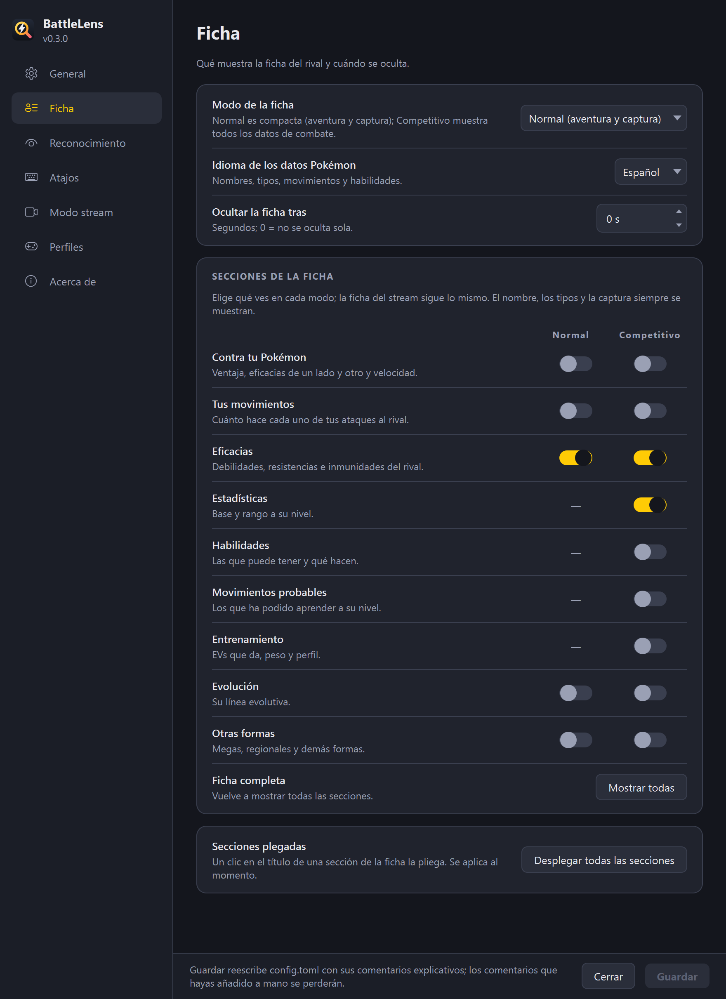
- Mostrar todas activa todas las secciones de golpe.
- Desplegar todas las secciones abre las que hayas plegado con un clic en su título.
- Idioma de los datos Pokémon: nombres, tipos, habilidades y movimientos en español, inglés, francés, alemán o italiano. Es independiente del idioma de los menús.
- Ocultar la ficha tras: segundos hasta ocultarla aunque siga el combate (0 = nunca).
Los cambios de esta página se aplican al pulsar Guardar. «Guardar» solo se activa si has cambiado algo, y la ventana avisa si la cierras con cambios pendientes. La ventana no bloquea nada: la detección sigue funcionando mientras está abierta.
Resto de ajustes
General
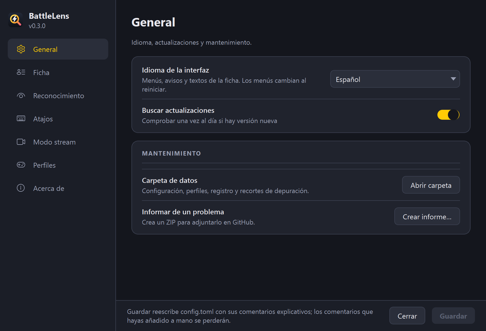
Idioma de la interfaz (menús, avisos y textos de la ficha): automático según Windows, español o inglés. Buscar actualizaciones una vez al día. Abrir carpeta de datos (configuración, perfiles, registro) y Crear informe… si algo falla.
Reconocimiento
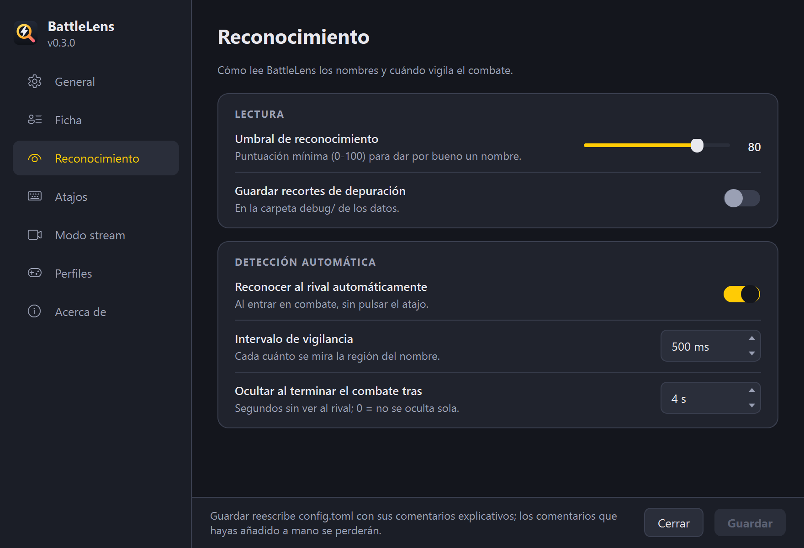
- Umbral de reconocimiento
- Lo seguro que debe estar BattleLens para dar un nombre por bueno (80 por defecto). Bájalo si no reconoce nombres que se leen bien; súbelo si confunde Pokémon.
- Guardar recortes de depuración
- Guarda cada recorte y lo que leyó el OCR. Útil para diagnosticar.
- Intervalo de vigilancia
- Cada cuánto se mira la región del nombre (500 ms).
- Ocultar al terminar el combate tras
- Segundos sin ver al rival hasta ocultar la ficha (4 s; 0 = nunca).
Atajos
| Atajo | Qué hace |
|---|---|
| Ctrl+Alt+P | Reconocer al rival ahora |
| Ctrl+Alt+C | Calibrar un perfil nuevo a mano |
| Ctrl+Alt+H | Ocultar la ficha |
| Ctrl+Alt+M | Cambiar entre Normal y Competitivo |
| Ctrl+Alt+F | Cambiar la forma del rival |
| Ctrl+Alt+S | Mostrar u ocultar la ficha del stream |
Todos necesitan un modificador (Ctrl, Alt, Shift o Win): las teclas F solas las usan los emuladores para los estados guardados.
Directo con OBS
El modo stream es opcional: desactivado, no cambia nada. Como tu ficha no sale en la captura, el público tiene la suya a través de OBS.
- Bandeja → Modo stream (OBS).
- Bandeja → Copiar URL para OBS (por defecto
http://localhost:17320/). - En OBS, añade una Fuente de navegador con esa URL (por ejemplo, de 800×900) y colócala en tu escena. El fondo es transparente.
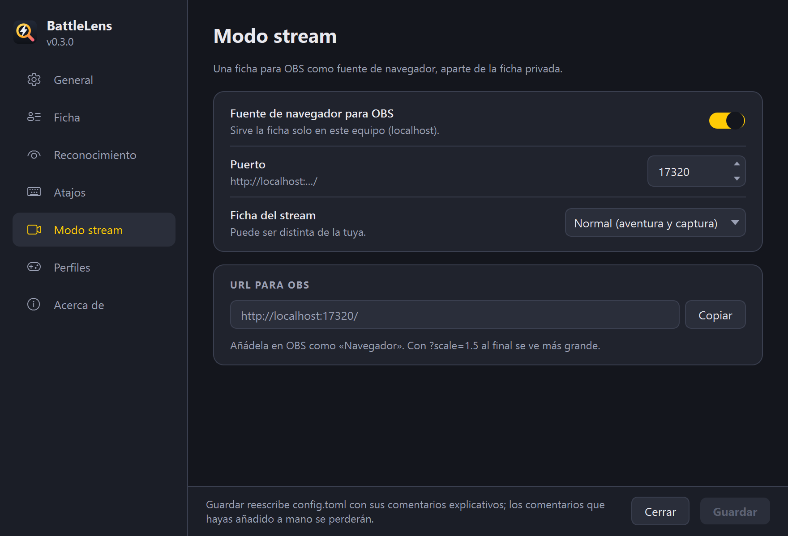
- La ficha del stream entra y sale con una animación con cada rival y se oculta al terminar el combate.
- Cerrar tu ficha no la oculta; Ctrl+Alt+S sí.
- Añade
?scale=1.5al final de la URL para verla más grande. - Tiene su propio modo (Normal o Competitivo) en Ajustes › Modo stream.
- Solo escucha en tu propio PC (
127.0.0.1): nadie de fuera puede abrirla.
Si algo no va bien
La ficha no aparece
- Comprueba en la bandeja que la Ventana del emulador es la correcta y que hay un Perfil activo.
- Comprueba que la Detección automática está activada, o pulsa Ctrl+Alt+P.
- ¿Has minimizado el emulador? BattleLens lee la ventana aunque esté tapada, pero no si está minimizada.
Sale «No reconocido» o un Pokémon equivocado
- Activa Ajustes › Reconocimiento → Guardar recortes de depuración y reconoce varios rivales.
- Abre la carpeta de datos (Ajustes › General → Abrir carpeta) y mira en
debug\: cada*-recorte.pngdebe contener solo el nombre. - Si no es así, pulsa Recalibrar… junto a Rival en Ajustes › Perfiles.
El modo Competitivo no muestra el nivel
La región del rival debe incluir el nivel. Recalíbrala con el nivel dentro. Sin nivel, la ficha sale sin movimientos probables ni estadísticas a su nivel.
Al cambiar a pantalla completa (o salir de ella) ya no reconoce nada
Las barras de menús y de estado del emulador desplazan la imagen del juego. Si el perfil es anterior a la versión 0.4 o se calibró a mano para un juego sin preset, sus regiones no se mueven con ella: vuelve a crearlo con Nuevo perfil con un preset… o recalíbralo con la ventana como vayas a jugar.
No reconoce a mi Pokémon
Si tiene mote, no se puede reconocer: BattleLens busca nombres de especie. La ficha del rival sigue funcionando.
Sigue fallando: informar del problema
Bandeja → Informar de un problema… crea un ZIP con tu configuración, el registro y una captura del emulador con lo que lee BattleLens en cada región. Se ocultan tu carpeta y tu nombre de usuario, y no se envía nada solo. Después se abre el formulario de fallo de GitHub con la versión, el emulador y el juego ya rellenados: solo tienes que adjuntar el ZIP.
Limitaciones
- Las megaevoluciones y formas no regionales no se distinguen por el nombre: elígelas con Ctrl+Alt+F. Gigamax no aparece porque no cambia tipos ni estadísticas.
- Los movimientos probables son los de un Pokémon salvaje o de un entrenador corriente; líderes, rivales y equipos competitivos pueden llevar otros.
- La comparativa es por tipos (ataques con STAB) y tiene en cuenta las habilidades que cambian la eficacia; si solo alguna de sus habilidades lo hace, la ficha avisa («si tiene Levitación»). No cuenta objetos ni habilidades como Rompemoldes.
- Tus movimientos usan su tipo y potencia del juego; los de tipo variable (Poder Oculto, Meteorobola…) muestran su tipo base.
Actualizar y desinstalar
Actualizar. BattleLens comprueba una vez al día si hay versión nueva (es su única conexión a internet, y se puede desactivar). Si la hay, te avisa y aparece Descargar BattleLens X.Y.Z… en la bandeja. Ejecuta el instalador nuevo: tus perfiles y ajustes se conservan.
Desinstalar. Desde Configuración → Aplicaciones → Aplicaciones instaladas → BattleLens. Te preguntará si quieres borrar también tus perfiles.
Tus datos están en %APPDATA%\BattleLens\: config.toml (los mismos valores que en Ajustes), los perfiles y el registro.